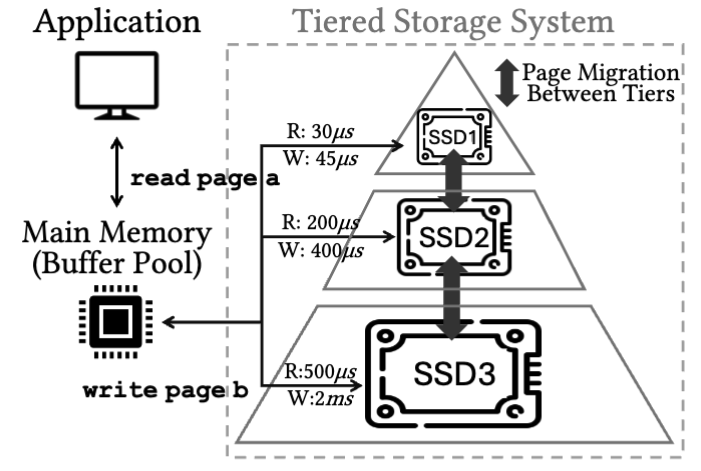
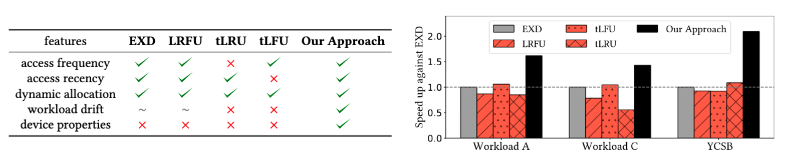
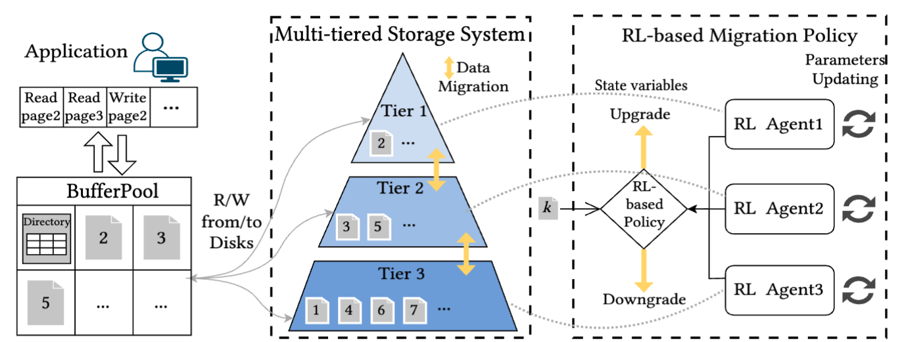

With the development of storage technologies, a wide variety of storage devices with different performance characteristics and cost profiles have emerged. Consequently, modern data systems are increasingly adopting multi-tiered storage solutions, where faster (but typically smaller) devices are placed in higher tiers, while lower tiers comprise slower, higher-capacity devices. A primary challenge in such systems is fine-grained data placement, i.e., determining how data blocks should be dynamically stored and migrated across different storage tiers to optimize overall performance. Effective data migration policies should be lightweight and adaptive to workload variations while considering storage device characteristics, notably the read/write asymmetry and parallelism of modern SSDs. In this paper, we introduce ReStore, a lightweight page-level reinforcement learning (RL) approach for data migration in multi-tiered storage systems, addressing both the performance and fine-grained access challenges common in database systems.
Popular policies like EXD and LRFU capture workload features via utility function but ignore device properties and struggle with workload drift. tLRU and tLFU capture access statistics, but are slow to adapt to drift and do not consider device properties. ReStore captures workload features and device properties and can adapt to dynamic workloads. Among the three workloads, A is more skewed, and YCSB shows higher drift. Our approach outperforms the state of the art by up to 2.2×.
In ReStore, RL agents manage page migrations in a multi-tiered storage system. Upon an I/O request, the page is served from its current tier, while ReStore decides in the background whether migration is needed based on RL agents and state values. Here we illustrate the workflow of ReStore framework, in which data migration between neighboring tiers is coordinated by their respective agents toward a unified goal – minimizing overall system response time. This multi-agent design provides scalability, flexibility, and efficiency, with scalability arising from the ability to adapt to varying numbers of tiers by simply adding or removing RL agents, and efficiency stemming from the fact that only one agent needs to be updated when the status of a tier changes.
